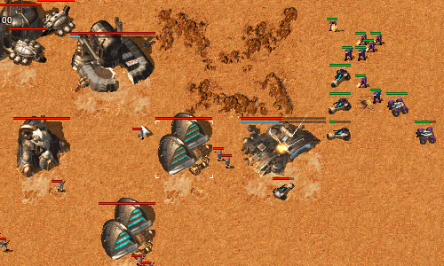
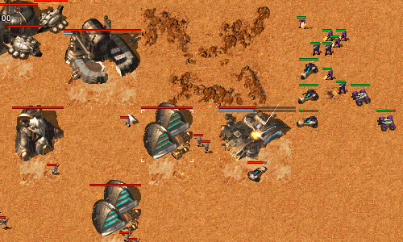

Welcome Back, Commander
OpenRA is a Libre/Free Real Time Strategy project that recreates the classic Command & Conquer titles.
We include recreations of C&C (Tiberian Dawn), C&C: Red Alert, and Dune 2000. These are not intended to be perfect copies, but instead combine the classic gameplay of the originals with modern improvements such as unit veterancy and the fog of war.
OpenRA's primary focus is cross-platform multiplayer between Windows, OS X, and Linux; however, we include a number of single-player missions, and also support skirmish games against AI bots.
Latest News
Release 20140608
Posted by Paul Chote at 2014-06-08 19:00 +1200
We are pleased to announce the June release of OpenRA. This is another huge milestone, with 52 authors contributing a total of 1582 commits since our holiday release.
Seeing is believing, and so we have worked with SoScared (who produced our awesome gameplay trailer) to create a video preview of this new release:
For the textually inclined, a brief summary of our key changes are:
- Significant UI improvements for selecting mods, the game lobby, replays, and spectating.
- Dramatic load-time improvements.
- Beacons for signaling team-mates and observers, and viewing the status of support powers.
- Aircraft and helicopters can now attack-move, guard, and be guarded by ground units.
- Vehicle husks can now be destroyed or captured.
- The RA mod now includes the Phase transport and a new Soviet Hijacker infantry.
- The D2K mod now includes concrete, the Grenadier, and a collection of graphical improvements.
- The TD mod received a collection of balance improvements, and several new maps.
- Our Tiberian Sun mod saw significant development, but will not be ready for several more months.
The full list of important changes are available on our wiki. We have also improved our website and build server, which are now “in the cloud”. Our new openra.net domain is served from Github Pages, and our installer packages are created using Travis CI. These changes should significantly improve the website responsiveness and download speeds.

Aircraft and helicopters can now attack-move and guard other units. Improvements to our Red Alert
mod include the
addition of the Phase Transport and terrain-specific camouflage for the Allied barracks.

Beacons and radar events make it easy to see important events and signal to your team-mates.
The Tiberian Dawn mod also received a complete balance overhaul.

Work on Dune 2000 has continued in this release, with the addition of concrete plates and the Atreides grenadier.
Graphical improvements include shrapnel, building animations, and turrets integrating with walls.

Maps uploaded to the OpenRA Resource Center can be downloaded and installed by players via the lobby.
The spawn-point selector also received an overhaul.

The new mod chooser is based on the design of our website, and provides a canvas to showcase your installed mods.